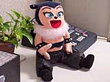

● ● ●
| ------------------------------------------------------------------------- |
| −−『ゲームボーイミュージック』の企画はどれくらい前からあったんですか。 |
| 谷口 制作に入ってから、足かけ２年です。もともとはまったく別の２つのプロジェクトだったんです。１つのプロジェクトでは、アートワークを担当していた人達が新しいキャラクターを作ろうとしていたんです。もう１つのプロジェクトでは、ハードウェアグループがゲームボーイカラーに載せるサウンドチップを考えていました。ゲームボーイカラーが子どもたちに浸透しているので、おもちゃみたいな使い方があってもいいかなと、商品企画を「ゲーム」より広く構えていました。「ゲームボーイカラーでこんな音が出る」という新しいものを考えようとしていたんですね。 この２つのプロジェクトは並行して走っていたんですが、北村が作ってくれたキャラが、かなり濃かった（笑）。それで、ソフトを企画するメンバーがなかなか使ってくれない。いっそのこと、その新しいキャラクターを使って、アートワークのチームが自分でソフトを作ったらどうかという話になりました。その一方で、ハードネタで考えていた音のプロジェクトも、ゲームとして活かす方法をいろいろと模索していたんですよ。そこで、この２つのプロジェクトをあわせることにしたんです。 |
| −−そのとき、ハードはゲームボーイアドバンスに決まったんですか。 |
| 谷口 いいえ。昨年の夏くらいまで、ずっとゲームボーイカラーの企画でした。音楽ソフトなので、どんなふうにまとめていくかという点に時間がかかったんです。ぐずぐずしているうちに、新しいハードが出るという話がありまして、アドバンスに乗り換えることにしました。アドバンスになったことで、ゲームボーイカラーではできなかったことがいろいろとできるようになりました。ゲームボーイカラーの音源でやろうとしていたときは、ハードにチップをつけ足さないと、音を増やせなかったんです。でも、アドバンスではソフトだけで音を鳴らしています。 中塚 ゲームボーイカラーの場合は２音しか出せなかったんですよ。 谷口 本体内蔵の音源で伴奏をしておいて、主役の２音でメロディを鳴らすという形でした。 坂上 最初は声だけを入れた「ボーカルカセット」を作って、それを流しながらソフトを試作していたんですよ。 谷口 主役であるこうもりのバーバラの人形を作って、背中にそのカセットを入れて、歌を流しながら伴奏をつけていったんです。ゲームボーイカラーのときは、主役２音のうち、１つはボーカルで、伴奏はギターという形にしないと、まとまらなかったんです。でも、アドバンスになって、ギター、ドラム、ベースといった音が均質に鳴らせるようになったんです。 |
| −−なるほど。それで、いまのように、バンドっぽく演奏できるようになったんですね。でも、ゲームの操作自体はとてもシンプルですよね。ゲームボーイカラーのときから、使うボタンは決まっていたんですか。 |
| 谷口 基本的な操作はゲームボーイカラーのときから変わりません。アドバンスで、ＬＲが加わっただけですね。もともとの発想は「オモチャ的な楽器を作ろう」ということだったので、キーボードをつけたりするつもりはまったくありませんでした。楽器が弾けなくても、コードがわからなくても、演奏ができるソフトにしたかったんです。逆に子どもたちは十字キーとボタンの操作がうまいはずなので、それで楽器が弾けることに意義がある、と。 |
| 坂上 ところで、みなさん、楽器はできますか。 |
| −−そうですねー。昔、ピアノはやっていましたけど、いまはやってないですね。 |
| 坂上 ギターは弾けますか。 |
| −−いえ、全然弾けないんですよ。 |
| 坂上 みなさん、そうですよね。なぜでしょう？ 僕も昔、ギターを弾きたかったんですけど、Ｆのコードが抑えられなくて挫折したんです。でも、『ゲームボーイミュージック』なら、Ｆのコードも簡単に弾けますよね。「ああ、これだ！ これが僕の求めていたものだ！」と思いました。 谷口 彼はゲームボーイミュージックで19（ジューク）の弾き語りをするのが夢なんですよ（笑）。 |